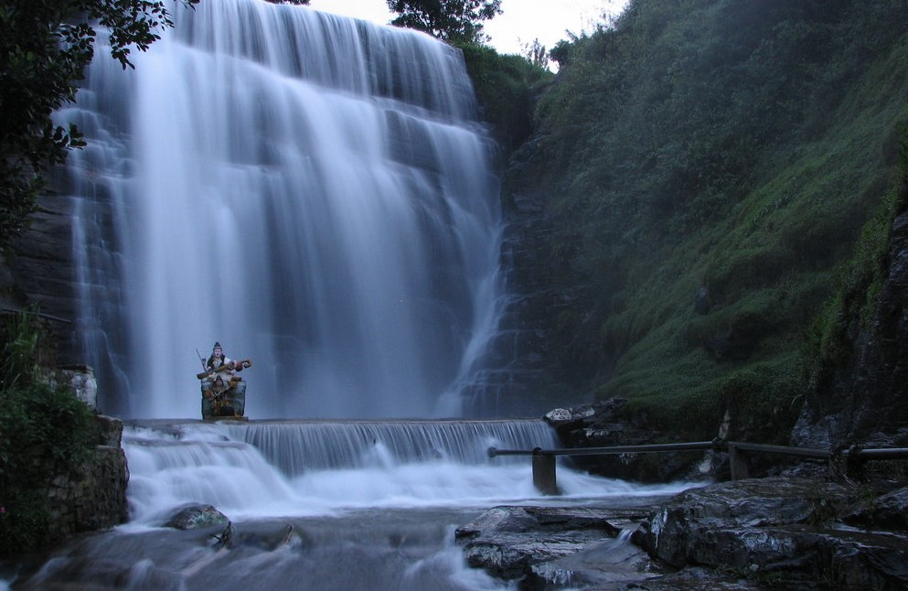

Nature
Despite its small size Sri Lanka boasts of one of the highest rates of biological endemism in the world whether in plants or animals and is included among the top five biodiversity hotspots in the world. Of the ninety-one species of mammals found in Sri Lanka Asian elephants, sloth bear, leopards, sambar and wild buffaloes engages the majority of the attention of wildlife enthusiast. Yet the rarest mammals of Sri Lanka are the red slender Loris, Toque Macaque, and Purple-faced Langur, who according to IUCN clarifications are endangered due to habitat loss.
Meanwhile the ocean around Sri Lanka is home to large families of cetaceans including the mighty blue whales, sperm whales and lively dolphins. Altogether 26 species of cetaceans rule the waters surrounding the country, making it one of the best locations for whale and dolphin watching.
Despite the mighty elephants and rare amphibians found in the country birds are the glory of the Sri Lanka’s wildlife. Boasting nearly 433 bird species of which 233 are resident Sri Lanka holds 20 endemic species while another 80 species have developed distinct Sri Lankan races, compared to their cousins in Indian mainland.
Although less celebrated, Sri Lanka has one of the richest diversity of amphibians in the world, containing over 106 species of amphibians of over 90 of which are endemic. The country has long claimed to have the highest amphibian species density in the world with a high concentration in the Sinharaja rainforest.